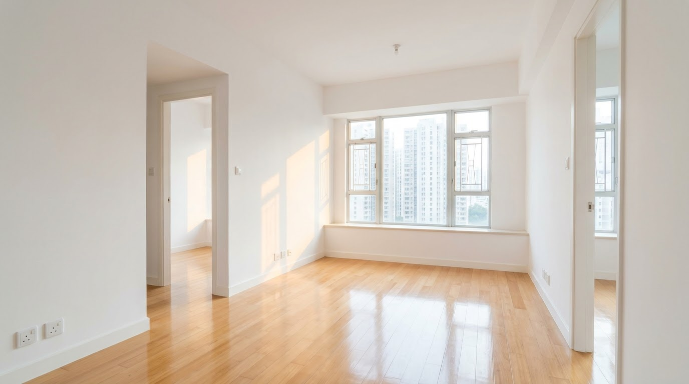

「終於等到執達吏破門，以為噩夢終於結束，點知一打開門嗰刻，先發覺係另一個地獄嘅開始……」
在我們處理過 300+ 宗收樓個案中，這句話幾乎是每位業主成功收回物業後的第一反應。很多業主以為，只要捱過漫長的法庭程序、拿到收樓令，就可以馬上找清潔工清走雜物，然後重新放租。
但我們必須嚴肅地告訴你：如果你在沒有法庭授權的情況下，擅自扔掉租客遺留下來的物品，你隨時會面臨被反告盜竊或索償的極大法律風險！
今天，我們就來拆解收樓程序的「最後一公里」，教你如何合法地清理滿屋垃圾，將爛攤子變回優質放盤。
打開大門，迎接你的卻是「堆填區」
業主林先生早前經歷了近半年的折騰，終於在執達主任及警員的陪同下，成功破門收回位於觀塘的單位。
當大門推開那一刻，林先生差點暈倒：屋內不僅傳出陣陣惡臭，客廳堆滿了一袋袋的垃圾、發霉的舊梳化，還有一堆不知名但看似有價值的電器和雜物。牆身被亂塗亂畫，地板更被嚴重刮花。

林先生原本已經預約了裝修師傅和清潔公司，打算當天下午就進行大清洗。他拿起黑色垃圾袋準備動手時，卻被同行的執達吏當場叫停。
清垃圾變刑事罪？「遺留物品」的法律陷阱
執達吏提醒林先生，法庭的收樓令只是把「單位的管有權」交還給業主，但屋內的物品在法律上依然屬於租客。
如果業主未經法律程序擅自清掉這些雜物，狡猾的職業租霸隨時會像「撞鬼」一樣突然出現，反咬業主一口：「屋入面有我幾十萬嘅名牌衫同古董，你全部掉晒，我要告你侵吞財產兼索償！」
林先生瞬間陷入進退兩難的死局：
選擇一：唔敢掉？
單位就變成一個免費的「私人堆填區」，無法裝修，更無法放租，每個月繼續白交管理費與差餉。
選擇二：照掉可也？
隨時惹上民事索償甚至刑事官非，為了一堆發臭垃圾，又要花大筆律師費去打官司。
收樓後面對滿屋雜物垃圾，唔知點樣合法處理？
切勿私自清理惹禍上身！立即讓專家為你代辦「棄置令」及一條龍吉屋翻新還原。
合法「棄置令」與一條龍清場翻新
面對這種「收樓後遺症」，擁有豐富實戰經驗的「收樓王」早已準備好一套萬全之策。我們接手林先生的案件後，立刻啟動了我們的「無風險資產清場機制」：
1. 極速申請「棄置令」封死後路
我們不會讓業主冒險。透過我們內部的專屬法律程序，我們協助林先生向法庭申請了一份具有絕對法律效力的「棄置令」。這份文件就等於法庭發出的「免責金牌」，在法定通知期過後，業主便擁有了絕對且合法的權利，去處置屋內所有遺留物品，徹底封死租客日後索償的任何可能。
2. 無縫銜接的一條龍清場服務
取得棄置令後，業主毋須親自面對惡劣的環境。我們的專業清場團隊會接手處理，合法清走所有大型傢俬及陳年垃圾。
3. 吉屋翻新，極速止血放盤
垃圾清走只是第一步。針對被租霸破壞的單位，我們更提供一條龍的「翻新修復服務」（包括基本執漏、牆身翻油、深層洗冷氣、地板修復等）。

短短幾星期內，我們將林先生那個猶如廢墟的單位，還原成光潔亮麗的「優質放盤狀態」，讓他能以好價錢迅速租給下一位好租客！
收樓，不應該停留在「攞返條匙」，
而是要「重新創造租金回報」。
面對屋內的爛攤子，盲目動手只會讓你踩入另一個法律陷阱。把收樓的最後一步交給累積處理 300+ 宗個案的「收樓王」。由合法申請棄置令、專業清場，到翻新還原，我們為你提供無縫的一條龍服務，讓你真正安枕無憂。
別讓租霸的垃圾，繼續佔用你的黃金地段！
你的單位剛剛收回，卻不知如何合法清理？
或正準備啟動收樓程序？
立即點擊下方按鈕，了解我們的「合法清場與翻新一條龍服務」。把廢墟交給我們，我們還你一個能馬上賺錢的黃金物業！